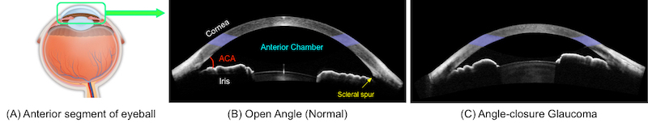
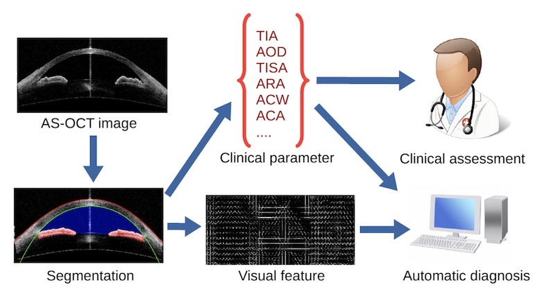

Angle-Closure Glaucoma Screening in Anterior Segment OCT
Introduction:

Angle-closure glaucoma is a major cause of irreversible visual impairment and can be identified by measuring the anterior chamber angle (ACA) of the eye. The ACA can be viewed clearly through anterior segment optical coherence tomography (AS-OCT). To address this problem, we propose a whole system for automatic AS-OCT segmentation, measurement, and screening.

Related Papers:
Huazhu Fu, Yanwu Xu, Stephen Lin, Xiaoqin Zhang, Damon Wing Kee Wong, Jiang Liu, Alejandro F. Frangi, Mani Baskaran, Tin Aung, "Segmentation and Quantification for Angle-Closure Glaucoma Assessment in Anterior Segment OCT", IEEE Transactions on Medical Imaging (TMI), 2017, Accepted. [PDF]
Huazhu Fu, Yanwu Xu, Damon Wing Kee Wong, Jiang Liu, Mani Baskaran, Shamira A. Perera, Tin Aung, "Automatic Anterior Chamber Angle Structure Segmentation in AS-OCT Image based on Label Transfer", in IEEE Engineering in Medicine and Biology Society (EMBC), 2016, pp. 1288-1291. [PDF]
Yanwu Xu, Lixin Duan, Huazhu Fu, Damon Wing Kee Wong, Baskaran Mani, Tin Aung, Jiang Liu, "Axial Alignment for Anterior Segment Swept Source Optical Coherence Tomography via Robust Low-rank Tensor Recovery", in International Conference on Medical Image Computing and Computer Assisted Intervention (MICCAI), 2016, pp. 441-449. [PDF]
Yanwu Xu, Jiang Liu, Damon Wing Kee Wong, Mani Baskaran, Shamira A. Perera, Tin Aung, "Similarity-weighted linear reconstruction of anterior chamber angles for glaucoma classification", in IEEE International Symposium on Biomedical Imaging (ISBI), 2016, pp. 693-697.
[PDF]